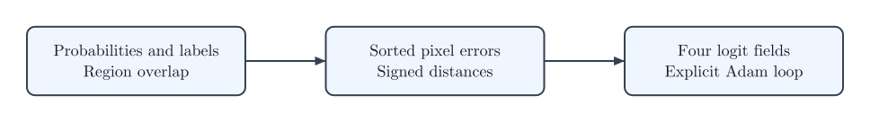
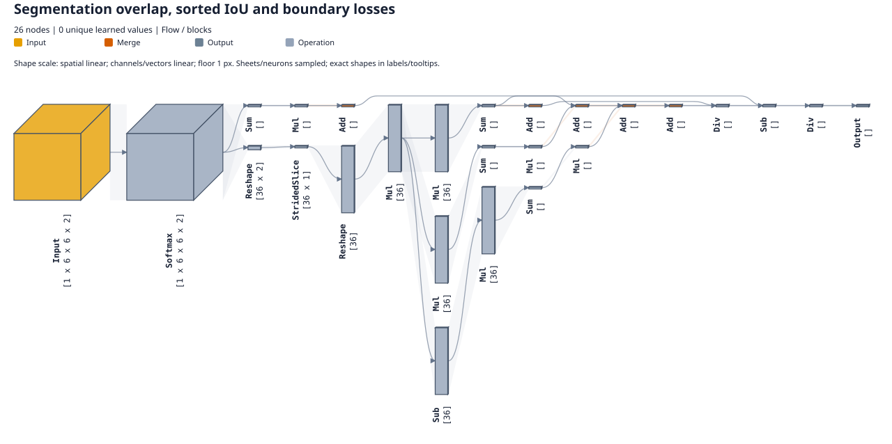
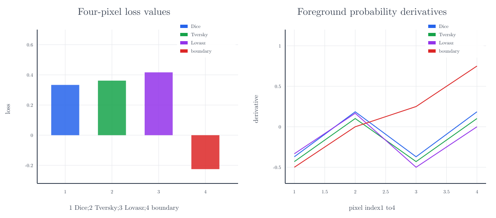
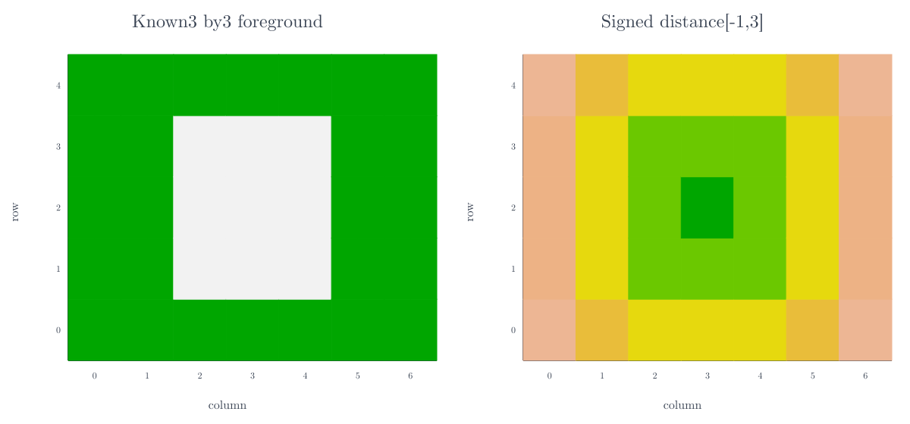
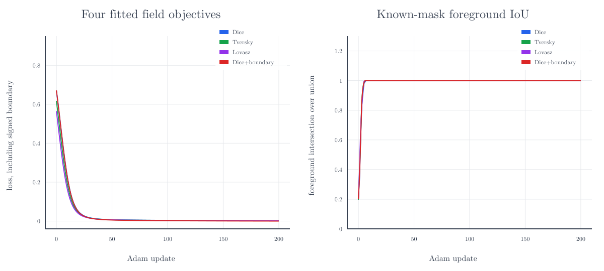
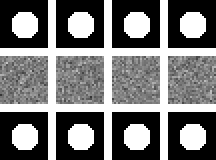

Segmentation overlap, sorted IoU and boundary losses
Abstract
Learning a foreground mask needs an objective that handles overlap, missed pixels and boundary geometry. Hand-checkable values and derivatives introduce Dice,Tversky,Lovász and boundary terms, followed by exact tensor distance maps and four explicit Adam fits to one known mask.
Source example: examples/cpp/source/nn/1_convolutional_neural_networks/1.7_segmentation/segmentation_losses.cpp.
The method
Dice and Tversky compare soft region overlap; Lovász weights sorted class errors by changes in Jaccard loss; a detached signed-distance map adds boundary geometry. All numerical computation uses tensors, including masks, sorting, Jaccard increments, distance transforms and optimization.
The concept diagram below is drawn by dm::graphics::Diagram. Its editable C++
source is the complete block below; regeneration uses the same datamunge toolchain
as the numerical examples. Exports consume the saved local SVG.
#include <dm/dm.hpp>
int main() {
std::filesystem::create_directories("build");
dm::graphics::Diagram diagram;
diagram.node("n0", {0.0, 0}, "Probabilities and labels\nRegion overlap");
diagram.node("n1", {5.2, 0}, "Sorted pixel errors\nSigned distances");
diagram.node("n2", {10.4, 0}, "Four logit fields\nExplicit Adam loop");
diagram.edge("n0", "n1").edge("n1", "n2");
diagram.save_svg("build/segmentation_losses_concept.svg");
}
Executed tensor architecture
This report defines objectives, not a classifier architecture. The figure traces the actual softmax-to-Dice objective on fixed pixel labels; it has no fitted parameters.
This figure executes the inference configuration shown in the code, using a zero-valued shape probe without fitting or loading a checkpoint. Named stage boundaries group whole subgraphs where available; other nodes retain functional-layer detail. Exact batch-inclusive shapes and reachable parameter totals come from the trace. Shared linear scales map spatial dimensions and channel counts to blocks; the one-pixel visibility floor is disclosed in the legend. Labels use compact monospace text, rotate counterclockwise and sit beside their own glyphs. Arrows flow left to right; wide diagrams scroll at native size on the website.
#include <dm/dm.hpp>
int main() {
namespace n = dm::nn;
namespace m = n::models;
n::set_num_threads(2);
std::filesystem::create_directories("build");
n::Module architecture_model(
[&](const n::Tensor& image) {
const auto labels = n::zeros({1, 6, 6}, n::DType::Int32);
return m::SoftDiceLoss(n::softmax(image, 3), labels, 2);
},
"Segmentation overlap, sorted IoU and boundary losses");
n::ModelPlotOptions options;
options.style = n::ModelPlotStyle::Flow;
options.detail = n::ModelPlotDetail::Blocks;
options.labels = {.type = n::ModelPlotLabel::NameAndShape, .size = 12, .wrap = 24};
options.spacing = {.layer = 24, .lane = 12, .label = 8, .margin = 20};
options.sizing.spatial_size = 96;
options.sizing.channel_size = 42;
options.sizing.minimum_extent = 1;
options.opacity = .8;
const auto diagram = architecture_model.plot(n::zeros({1, 6, 6, 2}), options);
diagram.save_svg("build/segmentation_losses_architecture.svg");
std::print(
"{} displayed nodes; {} reachable learned values.\n",
diagram.nodes().size(),
diagram.parameter_count());
}26 displayed nodes; 0 reachable learned values.

A four-pixel overlap and derivative calculation
Let foreground probabilities be [.8,.3,.4,.1] and truth [1,0,1,0].
Then TP=1.2, FP=.4 and FN=.8. Tversky loss is
1-(TP+epsilon)/(TP+alpha*FP+beta*FN+epsilon), with epsilon1e-6.
Dice chooses alpha=beta=.5, giving denominator1.8+epsilon. The default
Tversky alpha=.3/beta=.7 gives1.88+epsilon and penalizes missed foreground more.
Class losses pool pixels across the batch before averaging selected classes;
first_class=1 omits background. Out-of-range integer labels are void.
Lovász sorts absolute class errors [.6,.3,.2,.1] with stable lower-index ties.
The sorted Jaccard increments are [1/2,1/6,1/3,0], so the loss is5/12.
Sorting is detached and uses Float32 errors to preserve the source convention;
values and gradients retain the input dtype. Absent classes are skipped only
for Lovász; Dice/Tversky retain their selected-class average. All-void inputs
produce zero value and zero probability derivatives.
Boundary loss is mean(probability*signed_distance). For distances
[-2,0,1,3], it equals-.225 and its four derivatives are [-.5,0,.25,.75].
A negative value is expected. Distances are detached and the boundary term
supplements a region loss.
#include <dm/dm.hpp>
int main() {
namespace n = dm::nn;
namespace m = n::models;
const auto type = n::DType::Float64;
const auto y = n::from_vector(std::vector<std::int64_t>{1, 0, 1, 0}, {1, 1, 4}),
distance = n::from_vector(std::vector<double>{-2, 0, 1, 3}, {1, 1, 4, 1});
const std::array<std::string, 4> names = {"Dice", "Tversky", "Lovasz", "boundary"};
const std::array<dm::graphics::RGB, 4> colors = {
{{37, 99, 235}, {22, 163, 74}, {147, 51, 234}, {220, 38, 38}}};
auto values = dm::graphics::RPlot::create(), derivatives = dm::graphics::RPlot::create();
double error = 0;
const double expected[] = {1. - (1.2 + 1e-6) / (1.8 + 1e-6),
1. - (1.2 + 1e-6) / (1.88 + 1e-6), 5. / 12, -.225};
std::print("| loss | value | foreground derivatives |\n|---|---:|---|\n");
for (int which = 0; which < 4; ++which) {
auto p = n::from_vector(std::vector<double>{.2, .8, .7, .3, .6, .4, .9, .1}, {1, 1, 4, 2})
.requires_grad_();
const auto loss = which == 0 ? m::SoftDiceLoss(p, y, 2)
: which == 1 ? m::SoftTverskyLoss(p, y, 2)
: which == 2 ? m::LovaszSoftmaxLoss(p, y, 2, 1)
: m::BoundaryLoss(n::slice_axis(p, 3, 1, 2), distance);
const auto g = n::slice_axis(n::grad(loss, {p})[0], 3, 1, 2).reshape({4});
error = std::max(error, std::abs(loss.item() - expected[which]));
values.bars({double(which + 1)}, {loss.item()}, names[which], colors[which], .6);
derivatives.lines({1, 2, 3, 4}, g.to_vector<double>(), names[which], colors[which]);
std::print("| {} | {:.9f} | {:.6f}, {:.6f}, {:.6f}, {:.6f} |\n", names[which], loss.item(),
g.at({0}), g.at({1}), g.at({2}), g.at({3}));
}
if (error > 1e-12)
return 1;
values.title("Four-pixel loss values")
.x_label("1 Dice;2 Tversky;3 Lovasz;4 boundary")
.y_label("loss")
.x_limits(.4, 4.7)
.y_limits(-.32, .7);
derivatives.title("Foreground probability derivatives")
.x_label("pixel index1 to4")
.y_label("derivative")
.y_limits(-.7, 1.2);
std::filesystem::create_directories("build");
dm::graphics::RLayout::create(1, 2)
.add(values)
.add(derivatives)
.size(1200, 530)
.fit_panels()
.save_svg("build/segmentation_losses_fixture.svg");
std::print("Independent scalar values agree to {:.12f}; native tests check every "
"quotient-rule and sorted subgradient, perfect/absent/void cases.\n",
error);
}| loss | value | foreground derivatives |
|---|---|---|
| Dice | 0.333333148 | -0.370370, 0.185185, -0.370370, 0.185185 |
| Tversky | 0.361701935 | -0.430059, 0.101856, -0.430059, 0.101856 |
| Lovasz | 0.416666667 | -0.333333, 0.166667, -0.500000, 0.000000 |
| boundary | -0.225000000 | -0.500000, 0.000000, 0.250000, 0.750000 |
Independent scalar values agree to 0.000000000000; native tests check every quotient-rule and sorted subgradient, perfect/absent/void cases.

Exact tensor distance maps and the discrete boundary convention
For each foreground class, outside pixels have positive Euclidean distance to
foreground. Inside pixels use -(distance_to_background-1), making boundary
foreground pixels zero. Empty/full foreground classes have zero maps because
they have no internal boundary. Void pixels participate as background in the
distance topology but receive zero map values.
The original example used a linear-time host lower-envelope transform. This conversion performs exact separable tensor minima instead: horizontal squared distances followed by vertical squared distances. Work is O(H*W*(H+W)), with O(H*W*max(H,W)) temporary storage. The maps agree with the same nearest-seed definition; this is a transparent implementation tradeoff, not a linear-time performance claim. Native checks compare every value on100 random rectangular grids with exhaustive nearest-seed search, including no seeds.
#include <dm/dm.hpp>
int main() {
namespace n = dm::nn;
namespace m = n::models;
const auto y = n::arange(0, 5).reshape({5, 1}), x = n::arange(0, 7).reshape({1, 7});
const auto mask = n::logical_and(n::logical_and(n::greater_equal(y, 1.), n::less(y, 4.)),
n::logical_and(n::greater_equal(x, 2.), n::less(x, 5.)));
const auto labels = mask.to(n::DType::Int64).reshape({1, 5, 7}),
distance = m::SignedBoundaryDistances(labels, 2).reshape({5, 7});
if (distance.at({2, 3}) != -1 || distance.at({1, 2}) != 0 ||
std::abs(distance.at({0, 0}) - std::sqrt(5.)) > 1e-7)
return 1;
auto a = n::plot_tensor_map(n::reverse(mask.to(n::DType::Float32), {0}), 0, 1),
b = n::plot_tensor_map(n::reverse(distance, {0}), -1, 3);
a.title("Known3 by3 foreground")
.x_label("column")
.y_label("row")
.x_limits(-.5, 6.5)
.y_limits(-.5, 4.5);
b.title("Signed distance[-1,3]")
.x_label("column")
.y_label("row")
.x_limits(-.5, 6.5)
.y_limits(-.5, 4.5);
std::filesystem::create_directories("build");
dm::graphics::RLayout::create(1, 2).add(a).add(b).size(1200, 560).fit_panels().save_svg(
"build/segmentation_losses_distance.svg");
std::print("Centre -1; foreground boundary0; corner sqrt(5)={:.9f}; outside horizontal "
"distance2. Native100 rectangular exhaustive oracles pass.\n",
distance.at({0, 0}));
}Centre -1; foreground boundary0; corner sqrt(5)=2.236068010; outside horizontal distance2. Native100 rectangular exhaustive oracles pass.

Four visible Adam fits to a known circle
This example optimizes four independent24x24 probability fields for one known circle. It tests loss optimization, with no CNN, dataset split or held-out segmentation claim. All four logit fields are created before Adam(.1), seeded17 with normal standard deviation.25. Each of200 visible steps sums Dice, Tversky, foreground-only Lovász and Dice plus.1 times boundary loss. Only this illustration normalizes the distance map by24. No fitting loop is hidden in a helper. The target, initial fields and final fields appear in matching columns.
#include <dm/dm.hpp>
int main() {
namespace n = dm::nn;
namespace m = n::models;
n::set_num_threads(2);
constexpr int side = 24;
const auto y = n::arange(0, side).reshape({side, 1}),
x = n::arange(0, side).reshape({1, side});
const auto target = n::less(n::square(y - 12.) + n::square(x - 12.), 49.)
.to(n::DType::Int64)
.reshape({1, side, side}),
distance = m::SignedBoundaryDistances(target, 2) / double(side);
n::ParameterStore p(17);
for (int i = 0; i < 4; ++i)
p.get("field" + std::to_string(i), {1, side, side, 2}, n::init::normal(.25));
n::OptimizerConfig config;
config.kind = n::OptimizerKind::Adam;
n::Optimizer adam(p, .1, config);
const auto probabilities = [&]() {
std::vector<n::Tensor> out;
for (int i = 0; i < 4; ++i)
out.push_back(n::softmax(p.at("field" + std::to_string(i)), -1));
return out;
};
const auto terms = [&](const std::vector<n::Tensor> &prob) {
return std::vector<n::Tensor>{
m::SoftDiceLoss(prob[0], target, 2), m::SoftTverskyLoss(prob[1], target, 2),
m::LovaszSoftmaxLoss(prob[2], target, 2, 1),
m::SoftDiceLoss(prob[3], target, 2) +
.1 * m::BoundaryLoss(n::slice_axis(prob[3], 3, 1, 2), distance)};
};
std::vector<n::Tensor> initial_images;
{
n::NoGradGuard guard;
for (const auto &v : probabilities())
initial_images.push_back(n::slice_axis(v, 3, 1, 2));
}
const auto initial = terms(probabilities());
std::array<double, 4> first;
for (int i = 0; i < 4; ++i)
first[i] = initial[i].item();
std::vector<double> steps;
std::array<std::vector<double>, 4> trace, iou;
for (int step = 0; step <= 200; ++step) {
const auto prob = probabilities(), losses = terms(prob);
steps.push_back(step);
for (int i = 0; i < 4; ++i) {
trace[i].push_back(losses[i].item());
const auto predicted = n::equal(n::argmax(prob[i], 3), 1.), truth = n::equal(target, 1.);
iou[i].push_back(n::sum(n::logical_and(predicted, truth).to(n::DType::Float32)).item() /
n::sum(n::logical_or(predicted, truth).to(n::DType::Float32)).item());
}
if (step == 200)
break;
adam.minimize(losses[0] + losses[1] + losses[2] + losses[3]);
}
const std::array<std::string, 4> names = {"Dice", "Tversky", "Lovasz", "Dice+boundary"};
const std::array<dm::graphics::RGB, 4> colors = {
{{37, 99, 235}, {22, 163, 74}, {147, 51, 234}, {220, 38, 38}}};
auto a = dm::graphics::RPlot::create(), b = dm::graphics::RPlot::create();
std::print("| field | initial loss | final loss | foreground IoU |\n|---|---:|---:|---:|\n");
for (int i = 0; i < 4; ++i) {
if (trace[i].back() >= first[i] || iou[i].back() < .98)
return 1;
a.lines(steps, trace[i], names[i], colors[i]);
b.lines(steps, iou[i], names[i], colors[i]);
std::print("| {} | {:.9f} | {:.9f} | {:.6f} |\n", names[i], first[i], trace[i].back(),
iou[i].back());
}
a.title("Four fitted field objectives")
.x_label("Adam update")
.y_label("loss, including signed boundary")
.y_limits(-.04, .95);
b.title("Known-mask foreground IoU")
.x_label("Adam update")
.y_label("foreground intersection over union")
.y_limits(0, 1.3);
std::filesystem::create_directories("build");
std::vector<n::Tensor> gallery;
for (int i = 0; i < 4; ++i)
gallery.push_back(target.to(n::DType::Float32).reshape({1, side, side, 1}));
gallery.insert(gallery.end(), initial_images.begin(), initial_images.end());
for (const auto &v : probabilities())
gallery.push_back(n::slice_axis(v, 3, 1, 2));
n::save_image_grid(n::concat(gallery, 0), "build/segmentation_losses_fields.png", 4, 0., 1.,
8, 1., 2);
std::filesystem::create_directories("figures");
std::filesystem::copy_file("build/segmentation_losses_fields.png",
"figures/segmentation_losses_fields.png",
std::filesystem::copy_options::overwrite_existing);
dm::graphics::RLayout::create(1, 2).add(a).add(b).size(1200, 540).fit_panels().save_svg(
"build/segmentation_losses_training.svg");
std::print("200 explicit Adam(.1) updates fit4608 logit scalars across four independent "
"fields. Every field reconstructs the same known circle; this is in-sample "
"optimization only.\n");
}| field | initial loss | final loss | foreground IoU |
|---|---|---|---|
| Dice | 0.669585705 | 0.001614630 | 1.000000 |
| Tversky | 0.617314577 | 0.001543164 | 1.000000 |
| Lovasz | 0.564667881 | 0.001452238 | 1.000000 |
| Dice+boundary | 0.671191633 | -0.000130733 | 1.000000 |
200 explicit Adam(.1) updates fit4608 logit scalars across four independent fields. Every field reconstructs the same known circle; this is in-sample optimization only.


Regenerate adjacent views from this run
#include <filesystem>
int main() {
std::filesystem::copy_file("build/segmentation_losses_fields.png", "build/export_segmentation_losses_fields.png",
std::filesystem::copy_options::overwrite_existing);
}Conclusion
Independent values and derivatives explain each loss before optimization. Exact tensor distances retain the source geometry with higher axis-wise cost. The four fits demonstrate reconstruction of a known mask; they do not measure held-out segmentation or compare CNN architectures.
References
- [Salehi et al.(2017), Tversky loss function for image segmentation using3D fully convolutional deep networks](https://arxiv.org/abs/1706.05721).
- [Berman et al.(2018), The Lovász-Softmax loss](https://arxiv.org/abs/1705.08790).
- [Kervadec et al.(2019), Boundary loss for highly unbalanced segmentation](https://arxiv.org/abs/1812.07032).